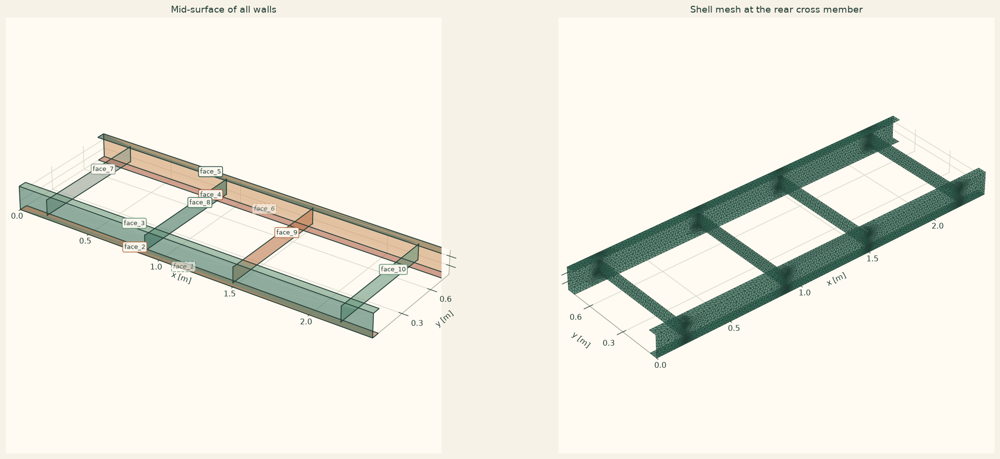
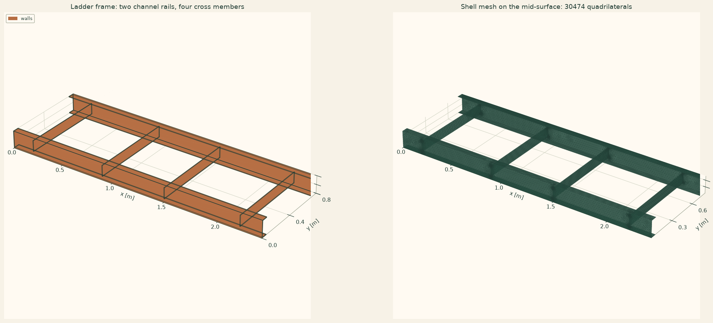

Docs › Examples › Ladder frame geometry and mid-surface
CAD geometry · 3D
Ladder frame geometry and mid-surface
A vehicle ladder frame of two channel rails and four cross members, built from plates and reduced to the mid-surface of its walls.
Run locally with OneSimulation. The example downloads are free. Running them requires an activated runtime. Runtime Alpha 0.2.1a8 · CPython 3.13 on macOS (Apple Silicon), Ubuntu 22.04 (x86-64), and Windows x64. Installation and activation · View pilot plans. Scope of the reference checks.


What it computes
OneSimulation imports a solid STEP frame, measures its envelope, extracts the mid-surface of all walls in one step, with corners and T-joints and the wall thickness, and lays quadrilateral shell elements on it. The script that builds the STEP file comes with the notebook.
What it checks
The 20 mm and 10 mm meshes have 12,342 and 31,312 shell nodes. On the fine mesh 30,474 quadrilaterals cover 1.604144 m², within 0.009 % of the plate-layout formula. The 6 mm shell has zero measured warpage.
Geometry
Save the STEP file ladder_frame_geometry.step next to the notebook before running it.


The geometry script
The script ladder_frame_geometry_geometry.py builds the geometry with the CAD objects of OneSimulation and writes the file. Change a dimension there, run it, and run the notebook again.
"""Build a uniform-wall demonstration chassis and export its solid geometry."""
from onesim.cad.d3 import Box, UnionFromObjects
rail, width, height, flange, wall, cross = 2.4, 0.8, 0.16, 0.06, 0.006, 0.1
stations = (0.2, 0.9, 1.5, 2.2)
plates = [
plate
for y0, inward in ((0.0, 1), (width - wall, -1))
for plate in (
Box(length=rail, width=wall, height=height, origin=(0.0, y0, 0.0)),
Box(
length=rail,
width=flange - wall,
height=wall,
origin=(0.0, y0 + wall if inward > 0 else y0 - flange + wall, 0.0),
),
Box(
length=rail,
width=flange - wall,
height=wall,
origin=(0.0, y0 + wall if inward > 0 else y0 - flange + wall, height - wall),
),
)
]
plates += [
Box(
length=wall,
width=width - 2 * wall,
height=cross,
origin=(x - wall / 2, wall, (height - cross) / 2),
)
for x in stations
]
frame = UnionFromObjects(objects=plates)
frame.save("ladder_frame_geometry.step")The notebook
The complete notebook, cell by cell. Run it to produce the figures and the comparison printout.
Truck and trailer chassis are ladder frames: two long side rails of channel section and a row of cross members between them. The walls are thin against every other dimension, so the frame is analysed with shell elements on the mid-surface of its walls rather than with solid elements.
part.midsurfaces() finds the pairs of opposite wall faces of a solid and returns one sheet that lies halfway between them, joined at corners and T-joints and carrying the wall thickness. SheetMesher lays quadrilaterals on it.
| member | section | count |
|---|---|---|
| side rail | channel \(h\times f\times t\) = 160 x 60 x 6 mm, flanges pointing inwards, 2.4 m long | 2 |
| cross member | flat web 100 x 6 mm between the rail webs, frame width 0.8 m | 4 |
Reference. A wall of thickness \(t\) meeting another wall at a corner or a T-joint has its mid-surface run to the mid-plane of the other wall. With rail length \(L\), frame width \(W\) and cross member height \(h_c\):
import numpy as np
from onesim.cad.exchange import load
from onesim.meshing import SheetMesher
from onesim.meshing.quality import quality
from onesim.visualization import plots, theme
theme.set()Inspect the imported solid
Read the demonstration chassis from its STEP file. Two channels and four flat cross members define the envelope. The downloadable CAD script sets their nominal section sizes; the imported solid determines the envelope dimensions.
frame = load("ladder_frame_geometry.step")
rail, width, height = frame.size
flange, wall, cross = 0.06, 0.006, 0.10
volume = (
2 * (rail * height * wall + 2 * rail * (flange - wall) * wall)
+ 4 * (width - 2 * wall) * cross * wall
)
print(f"Imported frame: {rail:.2f} × {width:.2f} × {height:.2f} m, {len(frame.faces)} CAD faces.")
print(f"Solid volume {frame.measure * 1e6:.3f} cm³; plate-layout reference {volume * 1e6:.3f} cm³.")Mid-surface and shell mesh
The mid-surface has one face per wall; the cross members end on the mid-planes of the rail webs.
middle = frame.midsurfaces()
area = 2 * (rail * (height - wall) + 2 * rail * (flange - wall / 2)) + 4 * (width - wall) * cross
coarse = SheetMesher(target_size=0.020).generate(middle)
mesh = SheetMesher(target_size=0.010).generate(middle)
for spacing, level in ((20, coarse), (10, mesh)):
print(f"{spacing:g} mm target: {len(level.coordinates)} shell nodes, {len(level.quadrilaterals)} quads, area {level.area:.6f} m²")
print(
f"mid-surface: {len(middle.faces)} faces for 10 walls, thickness {middle.thickness * 1e3:.3f} mm"
)
print(
f"mid-surface area {middle.area:.6f} m2, closed form {area:.6f} m2, deviation {middle.area / area - 1:+.1e}"
)
print(
f"shell mesh: {len(mesh.quadrilaterals)} quadrilaterals, area {mesh.area:.6f} m2; "
f"shell volume area x thickness {mesh.area * middle.thickness * 1e6:.3f} cm3"
)
report = quality(mesh)
print(
f"quadrilaterals: scaled Jacobian min {report['scaled_jacobian'].min():.3f}, warpage max {report['warpage'].max():.2e}"
)
view = plots.Camera(elevation=30, azimuth=-55)
fig = plots.figure(1, 2, size=(17, 7))
plots.geometry(
frame,
selection={"walls": frame.boundaries.all},
labels=False,
camera=view,
title="Ladder frame: two channel rails, four cross members",
ax=fig[0],
)
plots.mesh(
mesh,
camera=view,
title=f"Shell mesh on the mid-surface: {len(mesh.quadrilaterals)} quadrilaterals",
ax=fig[1],
)
plots.show()Figure
The mid-surface of all walls, and the shell mesh seen from the rear end, where the cross member meets the rail webs in T-joints.
joint = plots.Camera(elevation=35, azimuth=-130)
fig = plots.figure(1, 2, size=(17, 7))
plots.geometry(middle, labels=False, camera=view, title="Mid-surface of all walls", ax=fig[0])
plots.mesh(mesh, camera=joint, title="Shell mesh at the rear cross member", ax=fig[1])
plots.show()Going further
Load the frame in torsion with ElasticShell on ShellSurface.from_mesh(mesh) (onesim.physics.solid_mechanics), replace the flat cross members by tubes, or add gusset plates at the joints with frame.gusset(...).